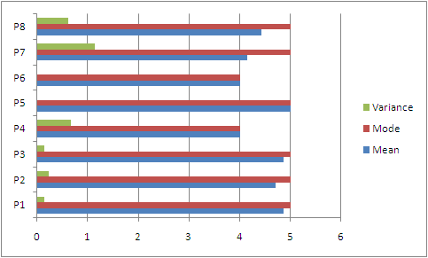
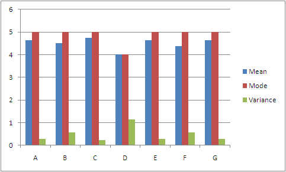

HCI Project
This phase
- Home
- Prototyping improvements
- Evaluation goals
- Evaluation design
- Evaluation results
- Redesign
- Appendices
Evaluation results
Subjects
- With one exception all participants are male.
- Ages range from 19-24.
- No participants own an iPad or Kindle.
- Participants read an average of 2-3 hours per week.
- Participants may have been biased as prototype interaction was performed with notable tester aid.
Data
Participants’ responses

This graph represents the mean, mode, and variance of a given participant’s responses. We analyzed this data to determine whether there were any patterns in the responses, or any significant outliers in baseline rating.
Observations:
- Overall variance is 0.17. This suggests participants rated with a reasonably consistent baseline.
- Another possibility is that our sample was too narrow.
- There was only one rating of 2, given by Participant 7 for Feature D.
- Participant 7 rated the features consistently high, with the sole exception of Feature D. This anomolous data lends credence to the idea that Participant 7 was trying to rate objectively, and perhaps merits further investigation.
Feature ratings

This graph deals specifically with the features and the ratings given to them. The legend below connects the letters with the actual survey questions.
| A | Discovering the ability to view concept map links was intuitive. |
| B | When following links, I found it easy to return to my original textbook page. |
| C | Flipping through pages linearly was easy and instinctive. |
| D | The ìpagesî view of the textbook was as easy to navigate as a paper textbook. |
| E | Navigating through different concepts was made easy with the integration of a concept map. |
| F | Creation and annotation of notes is an easy to use and desirable feature within the e-textbook. |
| G | The highlighting tool was easy and intuitive to use. |
Observations:
- Covariance between mean and variance is -.07, indicating that the higher the mean was the lower the variance. This is promising, as it suggests people agreed more on highly rated features.
- Features A, C, E, and G were largely agreed to be successful features.
- Feature D was the most contentious.
- Only Feature D was outside of 1 standard deviation. Other data points should be considered reliable.
Interview Observations
- 5/8 participants mentioned highlighting as a strength of the prototype over traditional textbooks.
- The above seemed contingent on there being a way to remove the highlighting.
- 6/8 mentioned the concept map or related features as a strength, insofar as they supervened on the normal book experience.
- 4/8 mentioned the inconvenience of reading from a screen as a prominent dislike.
- 6/8 would use the ebook reader if available instead of traditional textbooks. The remaining two mentioned the intrinsic enjoyment of tactile feedback as counter reasons.
- Several mentioned weight as the main reason why they would use the ebook reader over traditional textbooks.
- Highlighting for e-books did not feel destructive, which alleviates a psychological downside to traditional textbooks.
- One user remarked on the great convenience of the quick-bookmark feature.
Conclusions
- Cannot remove highlighting once it is in place. Must rectify this.
- Page flipping feature is contested, but data is too inconsistent to make a firm judgment. Could obtain more data?
- Concept map / hyperlink features are solid as is.
- Highlighting mode is not immediately off-putting.
- Potential market, could be strengthened by commercials remarking on the minimal eyestrain when reading from an iPad.